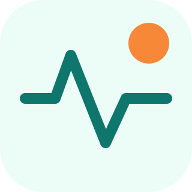

Complex UX / Spec product website
Triage Simulator
Adjust acuity to see how the queue reacts.
Risk flagsCompleteness scoringEscalation notesAudit-friendly handoff
Triage Simulator
Adjust acuity to see how the queue reacts.
Nurse priority score0

CareFlowHealthcare SaaSComplex UX / Spec product website
Adjust acuity to see how the queue reacts.
Triage Simulator